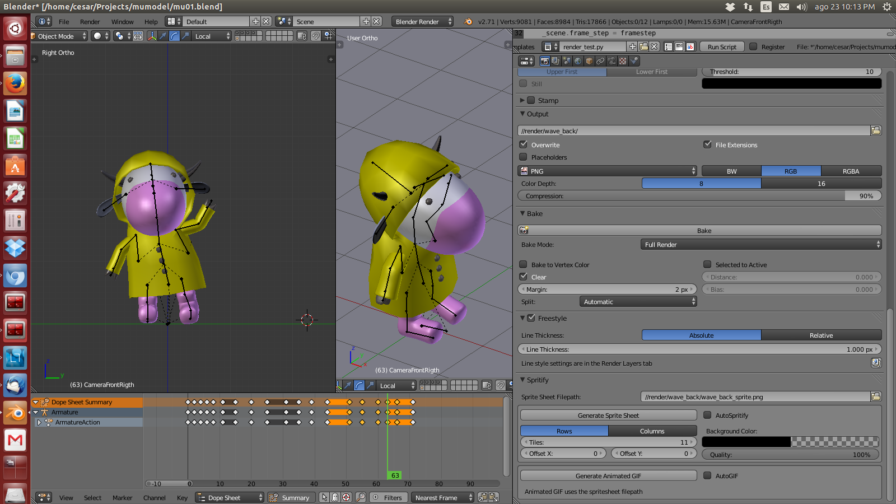
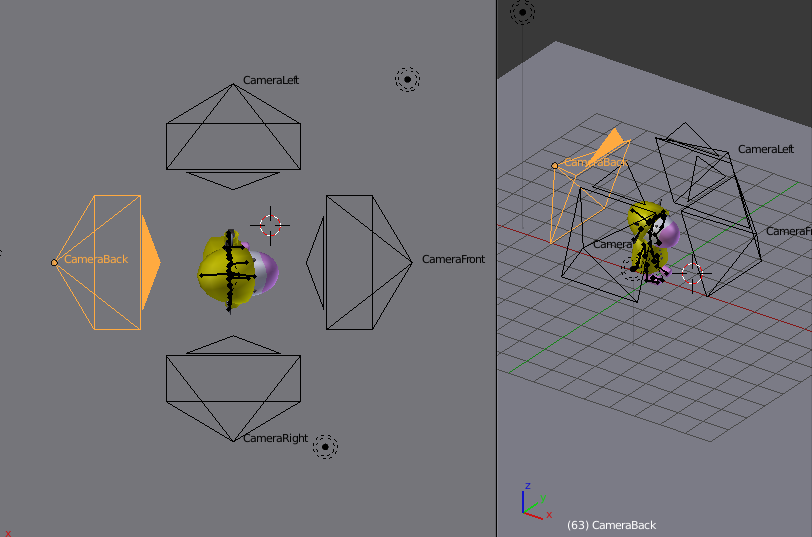
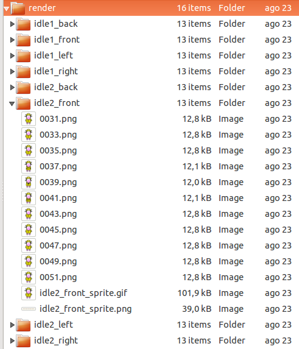
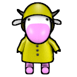
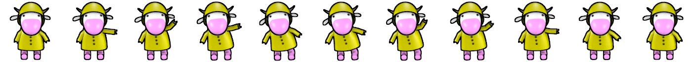

agosto 2014
La generación de sprites (tiras de imágenes 2D con una secuencia de animación) a partir un modelo de Blender3D tipicamente se realizaba utilizando la exportación de cada frame a un archivo png independiente, y luego utilizando algùn programa externo, como GIMP donde se importan los frames independientes como layers, y se usa un plugin especial para armar la tira del sprite.
Esta forma de producir el sprite es demasiado manual, y para un juego con varias decenas de personajes donde se necesite generar sprites no solo para cada animaciòn, sino por cada una de las vistas posibles, se convierte rápidamente en una soluciòn insostenible.
Blender 3D tiene la capacidad de ser controlado a través de scripts de python. Existen por lo tanto muchos plugins y scripts para Blender que permiten adaptarlo a todo tipo de necesidades. Una búsqueda en internet arrojará rápidamente varias opciones de scripts para generar sprites, uno de ellos es spritify.py, quien tiene la caracterìstica de estar integrado con el sistema de plugins de Blender:
El plugin debe ser descargado de la pagina (es un solo archivo .py) y luego, desde el panel de user preferences de Blender, se selecciona la opción de install addon from file.
En spritify, un panel nuevo es añadido a la ventana de render, en donde se puede definir la ruta del spritesheet y el número de tiles que va a permitir horizontal y verticalmente. Esto es genial, pero una vez más: realizar una configuración manual para cada una de las posibles combinaciones de animaciones y vistas no es fácil.
Importante: Spritify utiliza la librería ImageMagick, que se instala en linux ubuntu usando el siguiente comando:
sudo apt-get install imagemagick
Podemos aprovechar la versatilidad de Blender para que de manera automática configure spritify y genere el render para cada animación y cada cámara. Supongamos que se tienen las siguientes animaciones:
Si a esto se le suman cuatro vistas ("front", "back", "right", "left") requerimos producir 16 tiras de sprites, cada una con longitud diferente. Hay varias opciones para nuestra estrategia de automatización. En este caso, usaremos una configuración con cuatro cámaras predefinidas, que nuestro script irá activando secuencialmente y disparando tanto el render de Blender como el comando de spritify:
las cámaras se ubicaron en posiciones estratégicas y se configuraron de tipo "ortographic".
Ahora es tiempo de crear el script:
1 2 3 4 5 6 7 8 9 10 11 12 13 14 15 16 17 18 19 20 21 22 23 24 25 26 27 28 29 30 31 32 | import bpy _sceneName = "Scene" _scene = bpy.data.scenes[_sceneName] def renderStripAnim(prefix, frameini, frameend, framestep): _scene.spritesheet.tiles = ((frameend - frameini + 1) / framestep)+((frameend - frameini + 1 )%framestep) print("---" + prefix + "frames "+ str(frameini) + "-" + str(frameend) + " in "+ str(framestep) +" steps. tiles: " + str(_scene.spritesheet.tiles)) _scene.frame_start = frameini _scene.frame_end = frameend _scene.frame_step = framestep _scene.render.filepath = "//render/"+prefix + "/" _scene.spritesheet.filepath = _scene.render.filepath + prefix + "_sprite.png" bpy.ops.render.render(animation=True) bpy.ops.render.spritify() bpy.ops.render.gifify() def renderAllStripAnim(prefix, frameini, frameend, framestep): _scene.camera = bpy.data.objects["CameraFront"] renderStripAnim(prefix+"_front", frameini, frameend, framestep) _scene.camera = bpy.data.objects["CameraRight"] renderStripAnim(prefix+"_right", frameini, frameend, framestep) _scene.camera = bpy.data.objects["CameraLeft"] renderStripAnim(prefix+"_left", frameini, frameend, framestep) _scene.camera = bpy.data.objects["CameraBack"] renderStripAnim(prefix+"_back", frameini, frameend, framestep) renderAllStripAnim("walk", 1, 8, 1) renderAllStripAnim("idle1", 11, 31, 2) renderAllStripAnim("idle2", 31, 51, 2) renderAllStripAnim("wave", 51, 71, 2) |
En la parte inferior del script, se definen las llamadas al método renderAllStripAnim indicando el nombre de la animación, los frames iniciales y finales y la continuidad de los mismos.
Internamente, renderAlLStripAnim se encarga de ir activando cada una de las cuatro cámaras, y para cada cámara, invoca el método renderStripAnim, quien genera el render e invoca a spritify.
El resultado final será una carpeta render dentro de la cuál existirá una subcarpeta para cada animación. en cada subcarpeta existirán los frames individuales en formato png, la tira en formato .png y un .gif animado:
Y este es un ejemplo de la tira en formato png, y del gif animado:
 Un siguiente paso en el script sería unir todas las tiras para formar una sola imagen. Examinando el código de spritify (y esta es una de las grandes ventajas del software libre!) vemos que este plugin lo que hace es hacer llamadas imagemagick por linea de comandos. No se requiere demasiado trabajo para copiar esta llamada y adaptarla a nuestro script, para que genere una imagen concatenada (se usarían el comando convert con append de imagemagick). Eventualmente se puede eliminar por completo la dependencia con spritify en nuestro script.
En la consola, se puede probar directamente la concatenación de las tiras. el siguiente comando uniría tres tiras verticalmente para producir el sprite sheet all.png:
convert -append wave_back_sprite.png wave_front_sprite.png wave_right_sprite.png all.png
La forma de ejecutar este comando desde python es crear un array con el comando, modificadores y parámetros, e invocando subprocess.call:
1 2 3 4 5 6 7 8 9 | paths = [] paths.append("convert") paths.append("-append") #invocar esta linea en cada llamada a renderStripAnim: paths.append(bpy.path.abspath(path)) paths.append(bpy.path.abspath("//all.png")) subprocess.call(paths) |